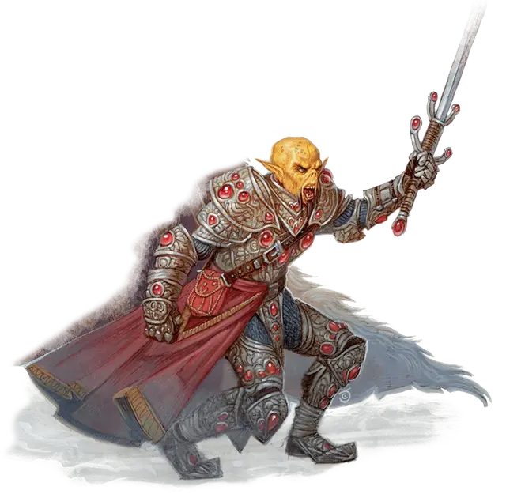

Гитъянки Кит'рак
Githyanki Kith'rak
Средний Гуманоид (Гит), любое мировоззрение

Класс Доспеха 18 (латы)
Хиты 180 (24к8 + 72)
Скорость 30 футов
| мод | спас | ||
|---|---|---|---|
| СИЛ | 18 | +4 | +4 |
| ЛОВ | 16 | +3 | +3 |
| ТЕЛ | 17 | +3 | +7 |
| мод | спас | ||
|---|---|---|---|
| ИНТ | 16 | +3 | +7 |
| МДР | 15 | +2 | +6 |
| ХАР | 17 | +3 | +3 |
Навыки Восприятие +6, Запугивание +7
Чувства пассивное Восприятие 16
Языки Гитский
Опасность 12 (8400 опыта)
Бонус мастерства +4
Среда обитания Город, Горы, Пустыня
Действия
Мультиатака. Гитъянки совершает три атаки Двуручным мечом.
Двуручный меч. Рукопашная атака оружием: +8 к попаданию, досягаемость 5 футов, одна цель. Попадание: 11 (2к6 + 4) рубящего урона плюс 17 (5к6) урона психической энергией.
Использование заклинаний (Псионика). Гитъянки накладывает одно из следующих заклинаний, используя Интеллект в качестве базовой характеристики и без использования материальных компонентов (Сл спасброска от заклинаний 15):
• Неограниченно: волшебная рука [mage hand] (рука невидима);
• 3/день каждое: размытый образ [blur], необнаружимость [nondetection] (только на себя);
• 1/день каждое: уход в иной мир [plane shift], телекинез [telekinesis].
Бонусные действия
Астральный шаг (перезарядка 4–6). Гитъянки телепортируется на расстояние до 30 футов в свободное пространство, находящееся в его поле зрения, вместе со всем снаряжением, которое она несёт и носит.
Сбор войск. Гитъянки может магически окончить состояния Очарованный и Испуганный на себе и всех существах по своему выбору, которых он может видеть в 30 футов от себя.
Реакции
Парирование. Гитъянки добавляет 4 к своему КД против одной рукопашной атаки, которая попала бы по нему. Чтобы сделать это, он должен видеть нападающего и держать в руках рукопашное оружие.
Описание
Милитаризированная культура гитъянки распределяет ранги и обязанности своим гражданам. Группы из 10 воинов следуют приказам сартов (гитъянки воитель [githyanki warrior]), а 10 сартов подчиняются приказам могучим кит’ракам. Эти чемпионы заслуживают свой статус через мучительные тренировки и псионические пытки, пока не смогут пользоваться уважением у своих подчинённых.
Гитъиянки
Гитъянки происходят от древнего народа, который также был прародителем гитцераев. Эти высокие, худощавые люди обладают мощными псионическими способностями и обитают, по большей части, на Астральном плане. Среди наиболее известных гитьянок - воинственные последователи королевы Лича Влаакит. Они терроризируют Астральный план, совершая набеги на другие планы, чтобы разграбить мультивселенную со всей её магией и богатствами.